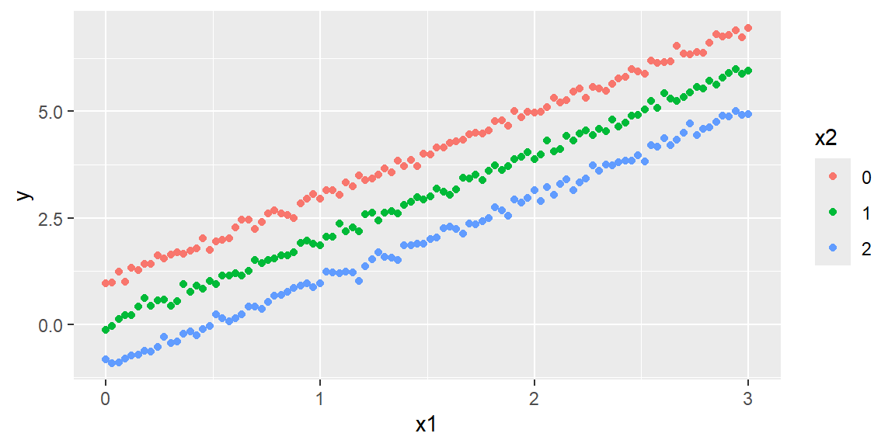
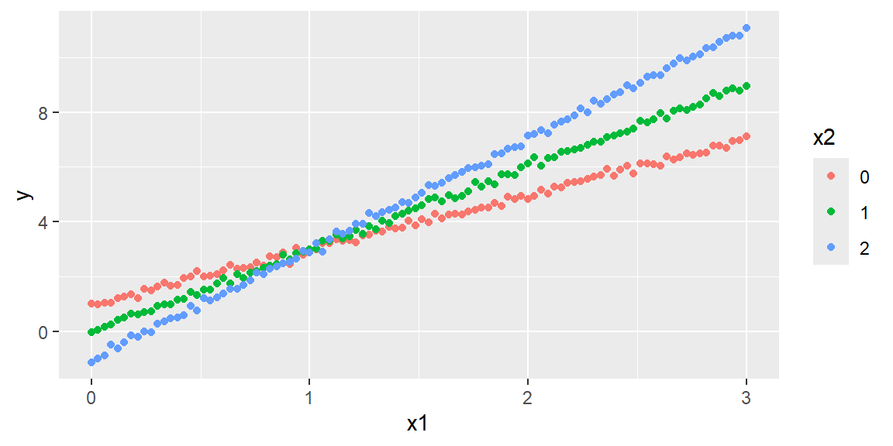

As they were in the simple regression case, the least squares estimators \({\bf b}\) are unbiased \[
\begin{align}
{\bf E}\left[{\bf b}\right] & =\boldsymbol{\beta}
\end{align}
\tag{13.1}\]
The \(p\times p\) covariance matrix is \[
\begin{align}
{\bf Cov}\left[{\bf b}\right] & =\sigma^{2}\left({\bf X}^{\prime}{\bf X}\right)^{-1}
\end{align}
\tag{13.2}\]
We can estimate the covariance matrix by using MSE as an estimate for \(\sigma^{2}\). We will denote this estimated covariance matrix as \[
\begin{align}
{\bf s}^{2}\left[{\bf b}\right] & =MSE\left({\bf X}^{\prime}{\bf X}\right)^{-1}
\end{align}
\tag{13.3}\]
From \({\bf s}^{2}\left[{\bf b}\right]\), we can obtain \(s^{2}\left[b_{0}\right]\), \(s^{2}\left[b_{1}\right]\), or the variance for any other coefficient to use in the confidence intervals and hypothesis tests.
13.1.1 Confidence Intervals for the Coefficients
A \(\left(1-\alpha\right)100\%\) confidence interval for the parameter \(\beta_{k}\) is \[
\begin{align}
b_{k} & \pm t_{\alpha/2,n-p}s\left[b_{k}\right]
\end{align}
\tag{13.4}\]
13.1.2 Tests for the Coefficients
We can test the hypothesis \[
\begin{align*}
H_{0}: & \beta_{k}=0\\
H_{a}: & \beta_{k}\ne0
\end{align*}
\] with the test statistic \[
\begin{align}
t^{*} & =\frac{b_{k}}{s\left[b_{k}\right]}
\end{align}
\tag{13.5}\] where \(t^{*}\sim t\left(n-p\right)\).
Example 13.1 (bodyfat data from Kutner1) In this dataset the bodyfat, tricep skinfold thickness, thigh circumference, and midarm circumference are found for 20 healthy females 25-34 years old. We want to model bodyfat based on the other three variables.
library(tidyverse)library(tidymodels)dat =read_table("BodyFat.txt")#prepare datadat_recipe =recipe(bfat ~ tri + thigh + midarm, data = dat) #setup modellm_model =linear_reg() |>set_engine("lm")#setup the workflowlm_workflow =workflow() |>add_recipe(dat_recipe) |>add_model(lm_model)#fit the modellm_fit = lm_workflow |>fit(data = dat)#to get the coefficients and CIslm_fit |>tidy(conf.int =TRUE, conf.level =0.95)
The global F-test is significant. The reason for the contradiction between the t-tests and the F-test will be discussed when we examine the correlation between predictor variables.
Recommendation for Checking the Utility of a Multiple Regression Model
First, conduct a test of overall model adequacy using the F-test.
If the model is deemed adequate (i.e., if you reject \(H_0\)), then proceed to step 2. Otherwise, you should hypothesize and fit another model. The new model may include more independent variables or higher-order terms.
Conduct \(t\)-tests on those \(\beta\) parameters in which you are particularly interested (i.e., the “most important” \(\beta\)’s). It is safe practice to limit the number of \(\beta\)’s that are tested. Conducting a series of \(t\)-tests leads to a high overall Type I error rate.
Extreme care should be exercised when conducting \(t\)-tests on the individual \(\beta\) parameters in a first-order linear model for the purpose of determining which independent variables are useful for predicting \(y\) and which are not.
If you fail to reject \(H_0: \beta_j = 0\), several conclusions are possible:
There is no relationship between \(y\) and \(x_j\).
A straight-line relationship between \(y\) and \(x_j\) exists (holding the other \(x\)’s in the model fixed), but a Type II error occurred.
A relationship between \(y\) and \(x_j\) (holding the other \(x\)’s in the model fixed) exists, but is more complex than a straight-line relationship (e.g., a curvilinear relationship may be appropriate). The most you can say about a \(\beta\) parameter test is that there is either sufficient (if you reject \(H_0: \beta_j=0\)) or insufficient (if you do not reject \(H_0: \beta_j=0\)) evidence of a linear (straight-line) relationship between \(y\) and \(x_j\).
13.2 Coefficient of Multiple Determination
As was the case with the simple regression model, the coefficient of determination for the multiple regression model (or the coefficient of multiple determination) is \[
\begin{align}
R^{2} & ={\frac{SSR}{SSTO}}\\
& {=1-\frac{SSE}{SSTO}}
\end{align}
\tag{13.6}\]
The interpretation is still the same: it gives the proportion of the variation in \(y\) explained by the model using the predictor variables.
13.2.1 Adjusted Coefficient of Determination
It is of importance to note that \(R^{2}\) cannot decrease when adding another \(x\) to the model. It can either increase (if the new \(x\) explains more of the variability of \(y\)) or stay the same (if the new \(x\) does not explain more of the variability of \(y\)). This can be seen in Equation 13.6 by noting that SSE cannot become larger by including more \(X\) variables and SSTO stays the same regardless of which \(X\) variables are used.
Because of this, \(R^{2}\) cannot be used for comparing the fit of models with different subsets of the \(x\) variables.
A modified version of the \(R^{2}\) could be used that adjusts for the number of \(X\) variables. It is called the adjusted coefficient of determination denoted as \(R_{a}^{2}\).
In \(R_{a}^{2}\), SSE and SSTO are divided by their respective degrees of freedom: \[
\begin{align}
R_{a}^{2} & =1-\frac{\frac{SSE}{n-p}}{\frac{SSTO}{n-1}}\\
& =1-\left(\frac{n-1}{n-p}\right)\frac{SSE}{SSTO}
\end{align}
\tag{13.7}\]
The value of \(R_{a}^{2}\) can decrease when another \(x\) is included in the model because any decrease in SSE may be more than offset by the loss of a degree of freedom of SSE (\(n-p\)).
13.3 Estimation and Prediction of the Response
13.3.1 Estimating the Mean Response
We estimate the mean response as we did in the simple linear case except now we will estimate at a vector of values: \[
\begin{align*}
{\bf X}_{h} & =\left[\begin{array}{c}
1\\
x_{h1}\\
x_{h2}\\
\vdots\\
x_{h,p-1}
\end{array}\right]
\end{align*}
\]
So the estimated mean response will be the regression function evaluated at \({\bf X}_{h}\): \[
\begin{align}
\hat{Y}_{h} & ={\bf X}_{h}{\bf b}
\end{align}
\tag{13.8}\] The variance of the estimated mean response is \[
\begin{align}
Var\left[\hat{Y}_{h}\right] & =\sigma^{2}{\bf X}_{h}^{\prime}\left({\bf X}^{\prime}{\bf X}\right)^{-1}{\bf X}_{h}
\end{align}
\tag{13.9}\]
We can estimate the variance as \[
\begin{align}
s^{2}\left[\hat{Y}_{h}\right] & =MSE{\bf X}_{h}^{\prime}\left({\bf X}^{\prime}{\bf X}\right)^{-1}{\bf X}_{h}
\end{align}
\tag{13.10}\]
We can then obtain a \(\left(1-\alpha\right)100\%\) confidence interval for the mean response at \({\bf X}_{h}\) as \[
\begin{align}
\hat{Y}_{h} & \pm t_{\alpha/2}s\left[\hat{Y}_{h}\right]
\end{align}
\tag{13.11}\] where \(t_{\alpha/2}\) has \(n-p\) degrees of freedom.
13.3.2 Predicting the Response
We can predict a new response \(Y_{h\left(new\right)}\) at some \({\bf X}_{h}\) with a \(\left(1-\alpha\right)100\%\) prediction interval \[
\begin{align}
\hat{Y}_{h} & \pm t_{\alpha/2}s\left[Y_{h\left(pred\right)}\right]
\end{align}
\tag{13.12}\] where \[
\begin{align}
s^{2}\left[Y_{h\left(pred\right)}\right] & =MSE\left(1+{\bf X}_{h}^{\prime}\left({\bf X}^{\prime}{\bf X}\right)^{-1}{\bf X}_{h}\right)
\end{align}
\tag{13.13}\]
Example 13.2 (Example 13.1 revisited) For the bodyfat data, suppose we want to predict and estimate at tri=25, thigh=51.2, and midarm=24.9. We will use the predict function.
new_dat =tibble(tri=25, thigh=51.2, midarm =24.9)#confidence interval for mean responselm_fit |>predict(new_dat, type ="conf_int", level =0.95)
In R, there are a number of functions involving probability distributions. Each available distribution will have some functions that can be utilized. For the normal distribution, we can access the functions
dnorm - gives the density (pdf) of the distribution
pnorm - gives the cumulative distribution function (cdf)
qnorm - gives the quantile of the distribution
rnorm - gives a random sample from the distribution
Different distributions will have the same four functions with the starting letter above. For example, if we want to use the binomial distribution, we can use the functions dbinom, pbinom, qbinom, and rbinom.
Note that the histogram is shown for one random sample. If you were to run the code again, it would give you a different sample and a different histogram.
If we would like to simulate from a normal distribution with mean 10 and standard deviation of 5, we would use the code rnorm(100, mean = 10, sd = 5)
13.4.2 Simulating a regression model
Suppose we had the regression model \[
\begin{align*}
y =& 1+2x_1 - x_2 + \varepsilon\\
&\varepsilon \sim N(0, 0.1)
\end{align*}
\]
We can use the rnorm function to obtain a sample of the error terms.
n =100eps =rnorm(100, mean =0, sd =0.1)
We now will obtain some values of the \(x\)s. Let’s make the values of \(x_1\) be values from 0 to 3. The values of \(x_2\) will be only the values 0, 1, 2. Thus, both predictors are quantitative but \(x_2\) is discrete.
We can simulate from the model by:
n =300eps =rnorm(n, mean =0, sd =0.1)x1values =seq(0, 3, length = n/3)x2values =c(0, 1, 2)values =expand.grid(x1values, x2values)x1 = values[,1]x2 = values[,2]y =1+2*x1- x2 + epsdf =data.frame(y = y, x1 = x1, x2 =factor(x2))ggplot(df)+aes(x = x1, y = y, color = x2)+geom_point()

13.4.3 An Interaction Model with Quantitative Predictors
When \(E(y)\) is graphed against any one variable (say, \(x_1\)) for fixed values of the other variables, the result is a set of parallel straight lines (like the plot above).
When this situation occurs (as it always does for a first-order model), we say that the relationship between \(E(y)\) and any one independent variable does not depend on the values of the other independent variables in the model.
However, if the relationship between \(E(y)\) and \(x_1\) does, in fact, depend on the values of the remaining \(x\)’s held fixed, then the first- order model is not appropriate for predicting \(y\). In this case, we need another model that will take into account this dependence. Such a model includes the cross products of two or more \(x\)’s.
For example, suppose that the mean value \(E(y)\) of a response \(y\) is related to two quantitative independent variables, \(x_1\) and \(x_2\), by the model \[
\begin{align*}
E(y) = 1+2x_1-x_2+x_1x_2
\end{align*}
\]
Let’s simulate from this model and construct a scatterplot of \(y\) versus \(x_1\) again:
n =300eps =rnorm(n, mean =0, sd =0.1)x1values =seq(0, 3, length = n/3)x2values =c(0, 1, 2)values =expand.grid(x1values, x2values)x1 = values[,1]x2 = values[,2]y =1+2*x1- x2 + x1*x2+ epsdf =data.frame(y = y, x1 = x1, x2 =factor(x2))ggplot(df)+aes(x = x1, y = y, color = x2)+geom_point()

Note that the graph shows three nonparallel lines. You can verify that the slopes of the lines differ by substituting each of the values \(x_2 = 0, 1\), and 2 into the equation.
Note that the slope of each line is represented by \[
\begin{align*}
\beta_1 + \beta_2 x_2 = 2+x_2
\end{align*}
\] Thus, the effect on \(E(y)\) of a change in \(x_1\) (i.e., the slope) now depends on the value of \(x_2\). When this situation occurs, we say that \(x_1\) and \(x_2\)interact.
The cross-product term, \(x_1x_2\), is called an interaction term, and the model called an interaction model with two quantitative variables.
Note an important point about conducting \(t\)-tests on the \(\beta\) parameters in the interaction model.
The “most important” \(\beta\) parameter in this model is the interaction term, \(\beta_3\).
Consequently, we will want to test \(H_0: \beta_3 = 0\) after we have determined that the overall model is useful for predicting \(y\). Once interaction is detected tests on the first-order terms \(x_1\) and \(x_2\) should not be conducted since they are meaningless tests; the presence of interaction implies that both \(x\)’s are important.
13.4.4 A Quadratic (Second-Order) Model with a Quantitative Predictor
All of the models discussed thus far proposed straight-line relationships between \(E(y)\) and each of the independent variables in the model.
We now consider a model that allows for curvature in the relationship.
This model is a second-order model because it will include an \(x^2\) term2.
Here, we consider a model that includes only one independent variable \(x\). The form of this model, called the quadratic model, is \[
\begin{align*}
y = \beta_0 + \beta_1 x + \beta_2 x^2 + \varepsilon
\end{align*}
\]
13.5 A Test for Comparing Nested Models
In regression analysis, we often want to determine (with a high degree of confidence) which one among a set of candidate models best fits the data.
We present such a method for nested models.
Two models are nested if one model contains all the terms of the second model and at least one additional term. The more complex of the two models is called the complete (or full) model. The simpler of the two models is called the reduced (or restricted) model.
To illustrate, suppose you have collected data on a response, \(y\), and two quantitative independent variables, \(x_1\) and \(x_2\), and you are considering the use of either a straight-line interaction model or a curvilinear model to relate \(E(y)\) to \(x_1\) and \(x_2\).
Will the curvilinear model provide better predictions of \(y\) than the straight-line model?
To answer this question, examine the two models, and note that the curvilinear model contains all the terms in the straight-line interaction model plus two additional terms—those involving \(\beta_4\) and \(\beta_5\): \[
\begin{align*}
E(y) &= \beta_0 + \beta_1 x_1 + \beta_2 x_2 + \beta_3 x_1 x_2 &\quad \text{Straight-line with interaction}\\
E(y) &= \beta_0 + \beta_1 x_1 + \beta_2 x_2 + \beta_3 x_1 x_2+ \beta_4 x^2_1 +\beta_5 x_2^2&\quad \text{Curvillinear model}
\end{align*}
\]
Consequently, these are nested models. Since the straight-line model is the simpler of the two, we say that the straight-line model is nested within the more complex curvilinear model.
Also, the straight-line model is called the reduced model while the curvilinear model is called the complete (or full) model.
Asking whether the curvilinear (or complete) model contributes more information for the prediction of \(y\) than the straight-line (or reduced) model is equivalent to asking whether at least one of the parameters, \(\beta_4\) or \(\beta_5\), differs from 0. Therefore, to test whether the quadratic terms should be included in the model, we test the null hypothesis \[
\begin{align*}
H_0: \beta_4 = \beta_5 = 0
\end{align*}
\] (i.e., the quadratic terms do not contribute information for the prediction of \(y\)) against the alternative hypothesis \[
\begin{align*}
H_a: \text{At least one of the parameters, }\beta_4 \text{ or } \beta_5, \text{differ from 0}
\end{align*}
\] (i.e., at least one of the quadratic terms contributes information for the prediction of \(y\)).
The procedure for conducting this test is intuitive. First, we use the method of least squares to fit the reduced model and calculate the corresponding sum of squares for error, \[
SSE_R
\] Next, we fit the complete model and calculate its sum of squares for error, \[
SSE_C
\]
Then, we compare \(SSE_R\) to \(SSE_C\) by calculating the difference, \[
SSE_R - SSE_C
\] If the quadratic terms contribute to the model, then \(SSE_C\) should be much smaller than \(SSE_R\), and the difference will be large. The larger the difference, the greater the weight of evidence that the complete model provides better predictions of \(y\) than does the reduced model.
The sum of squares for error will always decrease when new terms are added to the model. The question is whether this decrease is large enough to conclude that it is due to more than just an increase in the number of model terms and to chance.
To test the null hypothesis that the curvature coefficients simultaneously equal 0, we use an F statistic. For our example, this F statistic is: \[
\begin{align*}
F = \frac{\frac{(SSE_R - SSE_C)}{\text{Number of parameters beging tested}}}{\frac{SSE_C}{n-p}}
\end{align*}
\]
When the candidate models in model building are nested models, the \(F\)-Test is the appropriate procedure to apply to compare the models. However, if the models are not nested, this \(F\)-Test is not applicable. In this situation, the analyst must base the choice of the best model on statistics such as \(R^2_a\). It is important to remember that decisions based on these and other numerical descriptive measures of model adequacy cannot be supported with a measure of reliability and are often very subjective in nature.
Example 13.3 (Example 13.1 revisited - Nested F-test) Suppose, for some reason, we were to hypothesize that model needed the term midarm^2. Let’s conduct a nested F-test to see if this extra term is significant.
library(tidyverse)library(tidymodels)#prepare data for the complete modeldat_recipe =recipe(bfat ~ tri + thigh + midarm , data = dat) |>step_poly(midarm, degree =2)#setup modellm_model =linear_reg() |>set_engine("lm")#setup the workflow for complete modellm_workflow =workflow() |>add_recipe(dat_recipe) |>add_model(lm_model)#fit the complete modellm_fit_C = lm_workflow |>fit(data = dat)#setup the workflow for reduced modellm_workflow_R = lm_workflow |>update_recipe( dat_recipe |>step_rm(midarm_poly_2) )#fit the reduced modellm_fit_R = lm_workflow_R |>fit(data = dat)#extract the models and conduct nested F-testmodel_C = lm_fit_C |>extract_fit_engine()model_R = lm_fit_R |>extract_fit_engine()anova(model_R, model_C)
Analysis of Variance Table
Model 1: ..y ~ tri + thigh + midarm_poly_1
Model 2: ..y ~ tri + thigh + midarm_poly_1 + midarm_poly_2
Res.Df RSS Df Sum of Sq F Pr(>F)
1 16 98.405
2 15 90.397 1 8.008 1.3288 0.2671
Since the p-value is greater than 0.05, there is not enough evidence to conclude that the quadratic term coefficient is different than 0.
Kutner, M. H., Nachtsheim, C. J., Neter, J., & Li, W. (2004). Applied Linear Statistical Models McGraw-Hill/lrwin series operations and decision sciences.↩︎
Note: the interaction model is also second-order since it has two \(x\)s multiplied.↩︎